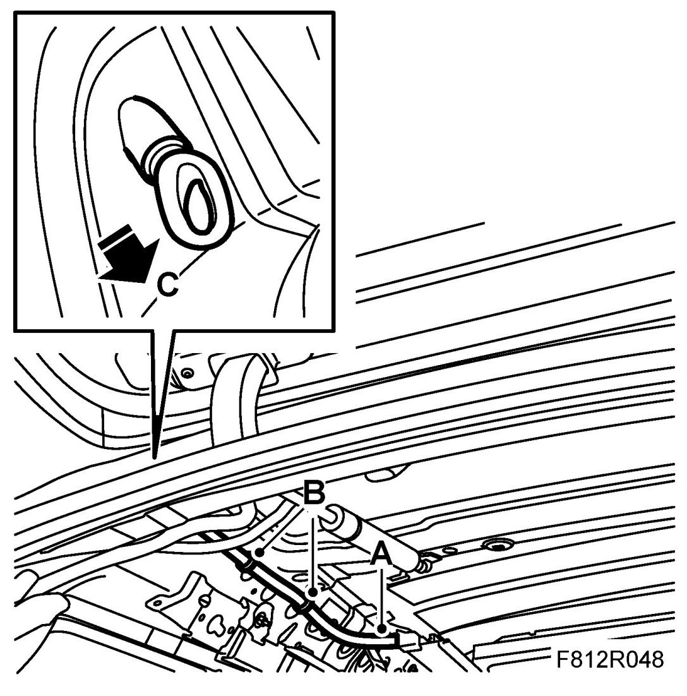
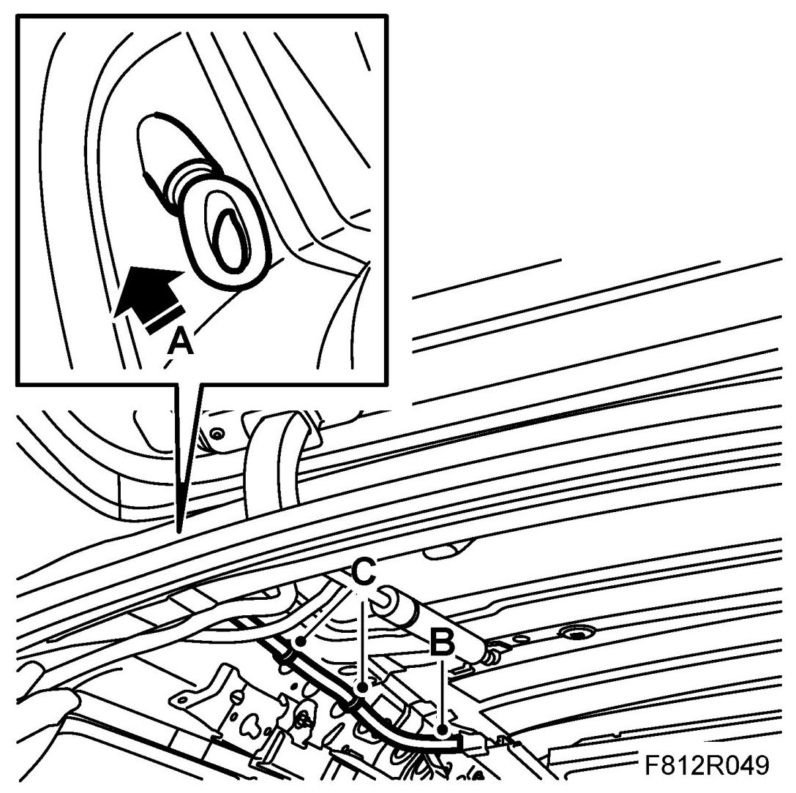

Rear Drainage Hose, Sunroof 5D
Rear Drainage Hose, Sunroof 5D
NOTE: Pay attention to cleanliness so that the headlining does not become dirty.
To remove
1. Remove the headlining, see Headlining, 5D.
2. Remove the rear drainage hose.

- Remove the hose from the sunroof assembly (A).
- Remove the clips, x 2 (B).
- Remove the hose at the rear anchorage point.
- Pull out the hose (C).
To fit
1. Fitting the rear drainage hose.

- Route a new hose through the hole at the rear anchorage point (A).
- Secure the hose to the rear anchorage point.
- Secure the hose for the sunroof assembly (B).
- Secure the clips, x 2 (C).
2. Fit the headlining, see Headlining, 5D.